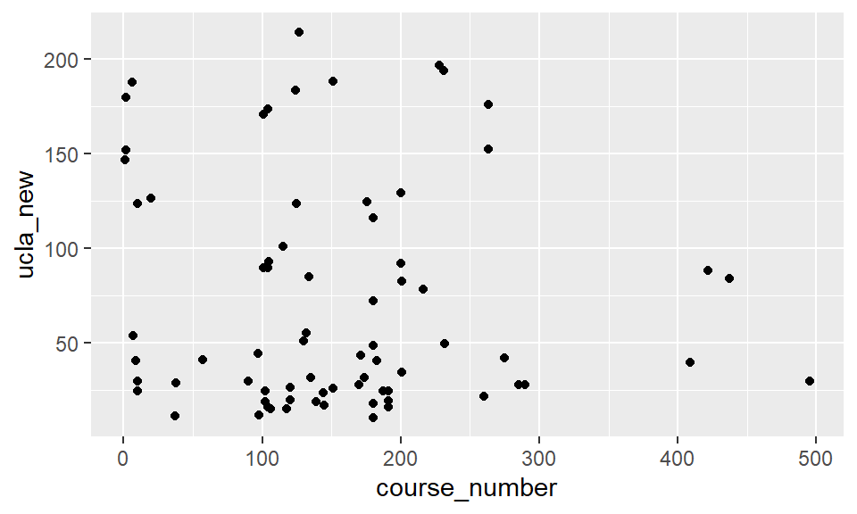
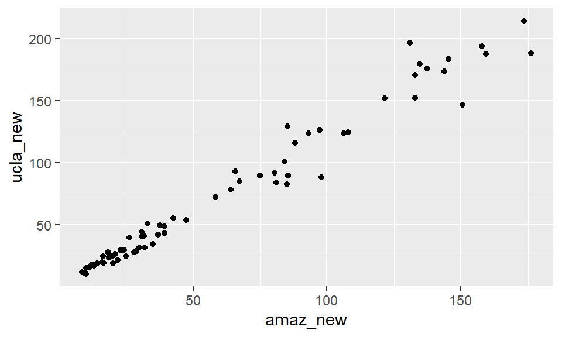
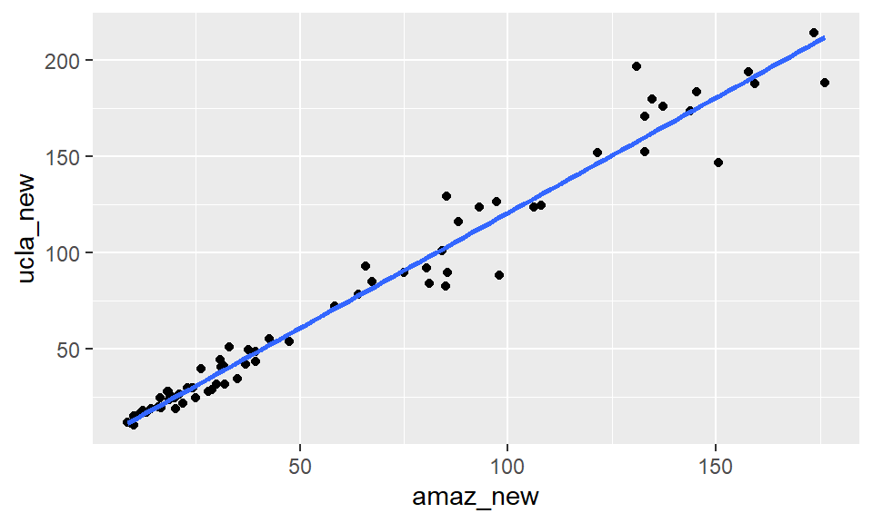
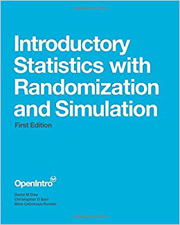
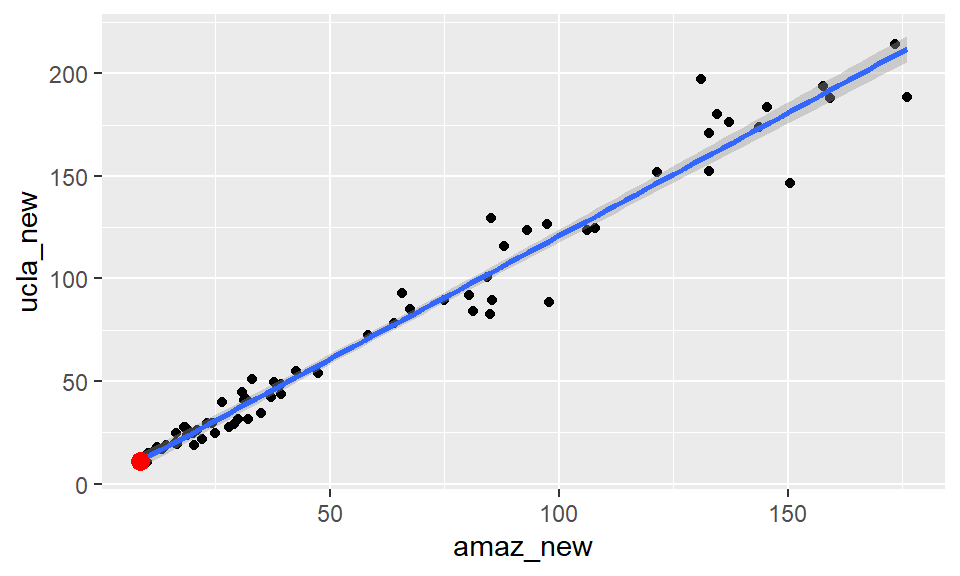

Introduction
Learning Objectives
By the end of this tutorial, you will be able to:
- Interpret slope and intercept coefficients in context
- Distinguish between units and scales in regression models
- Extract and use information from linear model objects in R
- Make predictions using fitted regression models
- Recognize common interpretation mistakes
Data set-up
Is that textbook overpriced?
We’ve spent some time building our graphical intuition about regression, as well as learning the mathematical specification of the model. Now it’s time to focus on what is often the most important thing about a regression model: interpreting the value of the coefficients.
Data were collected on 73 textbooks required for a few randomly selected courses at UCLA. For each textbook, we know the retail price at both the UCLA bookstore and on Amazon.com. We also know the department and course number for each corresponding course, and the ISBN of the book.
What factors are associated with the price of each book at the UCLA bookstore?
glimpse(textbooks)## Rows: 73
## Columns: 8
## $ dept_abbr <fct> Am Ind, Anthro, Anthro, Anthro, Art His, Art His, Asia A…
## $ course <chr> " C170", "9", "135T", "191HB", "M102K", "118E", "187B", …
## $ isbn <fct> 978-0803272620, 978-0030119194, 978-0300080643, 978-0226…
## $ ucla_new <dbl> 27.67, 40.59, 31.68, 16.00, 18.95, 14.95, 24.70, 19.50, …
## $ amaz_new <dbl> 27.95, 31.14, 32.00, 11.52, 14.21, 10.17, 20.06, 16.66, …
## $ more <fct> Y, Y, Y, Y, Y, Y, Y, N, N, Y, Y, N, Y, Y, N, N, N, N, N,…
## $ diff <dbl> -0.28, 9.45, -0.32, 4.48, 4.74, 4.78, 4.64, 2.84, 17.59,…
## $ course_number <dbl> 170, 9, 135, 191, 102, 118, 187, 191, 125, 145, 174, 180…Compared to the course number?
One might suppose that more advanced books cost more. Our best guess for the level of the course is to extract the course number. The scatterplot shows the relationship between the course number and the price of the book at the UCLA bookstore.
textbooks |>
ggplot(aes(x = course_number, y = ucla_new)) +
geom_point()
This relationship is very weak, and if anything it appears to be negative.
Compared to Amazon?
Instead, since Amazon.com provides a ready alternative for UCLA students, let’s consider the relationship between the prices of these books at Amazon, relative to their price at the UCLA bookstore.
ggplot(data = textbooks, aes(x = amaz_new, y = ucla_new)) +
geom_point()
Here we see clear evidence of a strong, positive, linear relationship.
As noted previously, the regression line can be added to the plot
with the geom_smooth() command. While this provides us with
the a way to visualize our model, it doesn’t actually tell us what the
fitted coefficients are.
ggplot(data = textbooks, aes(x = amaz_new, y = ucla_new)) +
geom_point() +
geom_smooth(method = "lm", se = FALSE)
Slope & intercept interpretation
To get those values, we’ll use the lm() command to
actually fit the model. We specify two arguments to
lm():
- a
formulathat indicates which variable is the response and which is the explanatory - a
dataargument that identifies the data frame where those variables are located
lm(ucla_new ~ amaz_new, data = textbooks)##
## Call:
## lm(formula = ucla_new ~ amaz_new, data = textbooks)
##
## Coefficients:
## (Intercept) amaz_new
## 0.929 1.199The output from lm() reminds us how we called it, and
then gives us the fitted coefficients. The value of the intercept
coefficient—\(\hat{beta}_0\)—is $0.93,
while the value of the slope coefficient—\(\hat{\beta}_1\)—is $1.20.
Regression equation
\[ \widehat{ucla_{new}} = 0.929 + 1.199 \cdot amazon_{new} \]
What this says is that for each additional dollar that Amazon charges for a book, the mean price of books at the UCLA bookstore increase by about $1.20. In effect, the mean price of books at the UCLA bookstore is about 20% higher than those on Amazon.
Generally, we are most interested in the slope coefficient, but occasionally the intercept coefficient is interesting as well. In this case, the intercept is not interesting: it merely tells us that we should expect a book that retails for 0 dollars on Amazon to cost about 93 cents at the UCLA bookstore. This, of course, is irrelevant. Furthermore, since the least expensive book in our dataset cost $8.60, interpreting the intercept requires extrapolation — making predictions outside the range of our observed data. This is problematic because we cannot verify whether our linear model remains valid for prices below $8.60.
Units and scale
When interpreting slope coefficients, one must pay careful attention to units and scales. Note that the units of the slope coefficient is the units of the response variable per unit of the explanatory variable. In this case, the prices at both bookstores are in dollars, but that is easily changed.
Here, we create a new variable for the price at Amazon in cents, and re-fit the model. Note that while the coefficient has changed, the underlying meaning has not. Here, we say that for each additional cent that a book costs on Amazon, the expected price at the UCLA bookstore increases by about 0.01199 dollars, or 1.2 cents. Thus, in both cases, the price of a book at the UCLA bookstore is about 20% higher, on average, than the corresponding price on Amazon.com.
textbooks <- textbooks |>
mutate(amaz_new_cents = amaz_new * 100)
lm(ucla_new ~ amaz_new_cents, data = textbooks)##
## Call:
## lm(formula = ucla_new ~ amaz_new_cents, data = textbooks)
##
## Coefficients:
## (Intercept) amaz_new_cents
## 0.92897 0.01199It’s time for you to start fitting your own regression models.
Your turn!
Recall that the fitted model for the poverty rate of U.S. counties as a function of high school graduation rate is:
\[ \widehat{poverty} = 64.594 - 0.591 \cdot hs_{grad} \]
Common Interpretation Mistakes
When interpreting regression results, watch out for these errors:
- Causation vs. Correlation: Regression shows association, not causation
- Switching Variables: Keep response and explanatory variables straight
- Units Confusion: Percentage vs. percentage points
- Scale Mismatches: Comparing coefficients across different scales
Interpretation in context
A politician interpreting the relationship between poverty rates and high school graduation rates implores his constituents:
If we can lower the poverty rate by 59%, we’ll double the high school graduate rate in our county (i.e. raise it by 100%).
Fitting simple linear models
While the geom_smooth(method = "lm") function is useful
for drawing linear models on a scatterplot, it doesn’t actually return
the characteristics of the model. As suggested by that syntax, however,
the function that creates linear models is lm(). This
function generally takes two arguments:
- A
formulathat specifies the model - A
dataargument for the data frame that contains the data you want to use to fit the model
The lm() function return a model object having class
"lm". This object contains lots of information about your
regression model, including the data used to fit the model, the
specification of the model, the fitted values and residuals, etc.
For this exercise, fit the following regression models:
- Using the
bdimsdataset, create a linear model for the weight of people (wgt) as a function of their height (hgt). - Using the
mlbbat10dataset, create a linear model forslg(y) as a function ofobp(x). - Using the
mammalsdataset, create a linear model for the body weight of mammals (body_wt) as a function of their brain weight (brain_wt), after taking the natural log of both variables.
# Linear model for weight as a function of height
lm(___ ~ ___, data = ___)
# Linear model for 'slg' as a function of 'obp'
# Log-linear model for body weight as a function of brain weight# The formula `y ~ x` means `y` is a function of `x`.# The formula `y ~ x` means `y` is a function of `x`.
# Linear model for weight as a function of height
lm(wgt ~ hgt, data = bdims)# The formula `y ~ x` means `y` is a function of `x`.
# Linear model for weight as a function of height
lm(wgt ~ hgt, data = bdims)
# Linear model for SLG as a function of OBP
lm(slg ~ obp, data = mlbbat10)# The formula `y ~ x` means `y` is a function of `x`.
# Linear model for weight as a function of height
lm(wgt ~ hgt, data = bdims)
# Linear model for SLG as a function of OBP
lm(slg ~ obp, data = mlbbat10)
# Log-linear model for body weight as a function of brain weight
lm(log(body_wt) ~ log(brain_wt), data = mammals)Units and scale
In the previous examples, we fit two regression models: \[ \widehat{wgt} = -105.011 + 1.018 \cdot hgt \] and
\[ \widehat{slg} = 0.009 + 1.110 \cdot obp \]
A linear model object
Previously, we learned how to fit a regression model using the
lm() command. However, we didn’t do much with it—we only
displayed the fitted coefficients in the console. The output from
lm() is an object, and there are a lot of useful things
that you can do with that object. To get started, we need to store the
output from lm() as an object in our environment, in this
case aptly named books_mod.
books_mod <- lm(ucla_new ~ amaz_new, data = textbooks)Note that mod is of class lm. This object
contains all of the information needed to fit our regression model,
including (by default) the relevant data, and lots of other pieces of
information that we can extract in various ways. It’s worth repeating
that books_mod is an object of type lm—it’s
not a data.frame, or a function, or a
matrix, or a vector.
class(books_mod)## [1] "lm"By default, when you try to output an lm object, you see
the “call” (the formula used to fit the model), as well as the fitted
coefficients.
books_mod##
## Call:
## lm(formula = ucla_new ~ amaz_new, data = textbooks)
##
## Coefficients:
## (Intercept) amaz_new
## 0.929 1.199Fitted coefficients
You can also return just the fitted coefficients as a vector using
the coef() function. This function takes a lm
object as an input and outputs the coefficients from the model. For our
purposes, these are the pieces of information that we are most
interested in.
coef(books_mod)## (Intercept) amaz_new
## 0.9289651 1.1990014Summary
In this tutorial, we treat regression as a descriptive statistical
technique—thus explaining our focus on the coefficients. In a later
tutorial, you will learn about inference for regression. In that
application, there is a whole host of other pieces of information about
your regression model that you’ll want to inspect. The
summary() function displays these. Just about every
statistical software package has a function that displays a similar
table of outputs for a regression model.
However, we won’t dive into this at the moment.
summary(books_mod)##
## Call:
## lm(formula = ucla_new ~ amaz_new, data = textbooks)
##
## Residuals:
## Min 1Q Median 3Q Max
## -34.785 -4.574 0.577 4.012 39.002
##
## Coefficients:
## Estimate Std. Error t value Pr(>|t|)
## (Intercept) 0.92897 1.93538 0.48 0.633
## amaz_new 1.19900 0.02519 47.60 <2e-16 ***
## ---
## Signif. codes: 0 '***' 0.001 '**' 0.01 '*' 0.05 '.' 0.1 ' ' 1
##
## Residual standard error: 10.47 on 71 degrees of freedom
## Multiple R-squared: 0.9696, Adjusted R-squared: 0.9692
## F-statistic: 2266 on 1 and 71 DF, p-value: < 2.2e-16Fitted values
Since the object books_mod contains everything R knows
about our model, we can ask R for the fitted values, using the
fitted.values() function. This returns a vector containing
the \(\hat{y}\) values for each
observation in our dataset.
In general, the length of the vector of fitted values is the same as the number of rows in the original data frame, since each observation corresponds to exactly one value of \(\hat{y}\). However, if there were any observations with missing data, those will be automatically discarded by R when the model is fit, and thus, the length of the vector of fitted values may not be as large as the number of rows in the original data frame.
fitted.values(books_mod)## 1 2 3 4 5 6 7 8
## 34.44105 38.26587 39.29701 14.74146 17.96678 13.12281 24.98093 20.90433
## 9 10 11 12 13 14 15 16
## 128.32287 16.82772 36.83906 106.54900 23.05054 20.67652 117.68772 57.89352
## 17 18 19 20 21 22 23 24
## 90.77014 160.12038 146.60764 130.42112 14.92131 23.63805 15.60474 27.24705
## 25 26 27 28 29 30 31 32
## 38.26587 35.64006 20.29284 46.19127 39.03323 40.46004 37.94214 102.84409
## 33 34 35 36 37 38 39 40
## 42.83406 118.37115 98.26390 12.31948 13.15878 162.42247 173.28542 211.95321
## 41 42 43 44 45 46 47 48
## 181.53455 175.26377 209.02765 157.99815 189.98751 165.39599 30.84405 191.90591
## 49 50 51 52 53 54 55 56
## 28.58993 26.15595 52.10235 48.13365 103.08389 112.59197 81.74166 160.14436
## 57 58 59 60 61 62 63 64
## 30.07669 30.84405 103.38364 13.01490 79.73933 101.95682 11.24038 70.97463
## 65 66 67 68 69 70 71 72
## 97.29271 77.77297 45.33998 25.16078 48.09768 32.54663 29.93281 23.37427
## 73
## 22.77477# Show what happens with missing data
textbooks_missing <- textbooks |>
mutate(amaz_new = ifelse(row_number() <= 3, NA, amaz_new))
books_mod_missing <- lm(ucla_new ~ amaz_new, data = textbooks_missing)
# Note: R automatically removes NA values
nrow(textbooks_missing)## [1] 73length(fitted.values(books_mod_missing))## [1] 70Residuals
Similarly, each fitted value generates a residual. This residual is
the difference between the actual observed value of the response
variable, and the expected value of the response according to our model.
These residuals can be retrieved using the residuals()
function, which returns the vectors of residuals.
residuals(books_mod)## 1 2 3 4 5 6
## -6.77105468 2.32413081 -7.61701041 1.25853860 0.98322479 1.82719051
## 7 8 9 10 11 12
## -0.28093350 -1.40432868 -4.48286560 0.17227613 -5.20905751 9.45100013
## 13 14 15 16 17 18
## 4.61945878 4.02348159 8.98227697 -3.99352239 -1.04014123 10.87961683
## 19 20 21 22 23 24
## 5.39236280 -5.62111808 1.07868839 2.31194809 2.39525758 -5.51704618
## 25 26 27 28 29 30
## 2.32413081 -6.69005609 -0.34283796 3.25873144 2.05676990 10.48995821
## 31 32 33 34 35 36
## 6.55786119 -20.39408550 -8.23406459 -29.95115384 -14.26390008 -1.06947854
## 37 38 39 40 41 42
## 1.84122047 17.60753411 0.71458128 -23.37321441 -34.78454847 8.48622894
## 43 44 45 46 47 48
## 5.47234904 39.00184934 4.01249154 10.85401060 -6.14405043 -3.90591073
## 49 50 51 52 53 54
## 1.11007224 0.08404511 3.02765446 -4.57365085 26.51611422 11.24803299
## 55 56 57 58 59 60
## 3.37833944 -7.66436320 -0.37668952 -6.14405043 -13.67363613 -2.51489936
## 61 62 63 64 65 66
## 13.14067180 -1.07682445 0.70962274 1.49537216 -5.19270894 0.57703413
## 67 68 69 70 71 72
## -3.33997755 -6.41078371 0.36231919 7.00336756 -0.28280935 0.38572840
## 73
## 4.92522911the broom package
The R ecosystem is constantly evolving. In this tutorial—and series of tutorials—we have been working with a set of tools called the tidyverse. One of the packages in the tidyverse is called broom, since its goal is to help you tidy up a bit.
By loading the broom package and then running the
augment() function on our lm model object, we
recover a data.frame that contains our original response
and explanatory variable, along with the fitted values, residuals,
leverage scores, and several other pieces of information relevant to
each observation. Working with these tidy data frames can simplify some
of the work we do with our models after they are fit.
augment(books_mod)In the next series of exercises, you’ll work with your own linear model objects.
Your turn!
An "lm" object contains a host of information about the
regression model that you fit. There are various ways of extracting
different pieces of information.
The coef() function displays only the values of the
coefficients. Conversely, the summary() function displays
not only that information, but a bunch of other information, including
the associated standard error and p-value for each coefficient, the
\(R^2\), adjusted \(R^2\), and the residual standard error. The
summary of an "lm" object in R is very similar to the
output you would see in other statistical computing environments
(e.g. Stata, SPSS, etc.)
We have already created the hgt_wgt_mod object, a linear
model for the weight of individuals as a function of their height, using
the bdims dataset and the code
hgt_wgt_mod <- lm(wgt ~ hgt, data = bdims)Now, you will:
- Use
coef()to display the coefficients ofhgt_wgt_mod. - Use
summary()to display the full regression output ofhgt_wgt_mod.
# Show the coefficients
# Show the full model output Use `coef()` and `summary()` on the `hgt_wgt_mod` model object.# Show the coefficients
coef(hgt_wgt_mod)
# Show the full model output
summary(hgt_wgt_mod)Fitted values and residuals
Once you have fit a regression model, you are often interested in the fitted values (\(\hat{y}_i\)) and the residuals (\(e_i\)), where \(i\) indexes the observations. Recall that:
\[ e_i = y_i - \hat{y}_i \]
The least squares fitting procedure guarantees that the mean of the residuals is zero. At the same time, the mean of the fitted values must equal the mean of the response variable.
In this exercise, we will confirm these two mathematical facts by
accessing the fitted values and residuals with the
fitted.values() and residuals() functions,
respectively, for the following model:
hgt_wgt_mod <- lm(wgt ~ hgt, data = bdims)mod (defined above) is available in your workspace. We
will use the all.equal() function to confirm that the mean
of the body weights equals the mean of the fitted values of
hgt_wgt_mod. This function takes two inputs (separated by a
comma) that you would like to check if they are equal (up to a tolerance
of 1.5e-8).
Hint: Remember, you can extract a specific column of a
data.frame using the $.
Next, compute the mean of the residuals of hgt_wgt_mod
and check if it is equal to 0.
# Mean of weights equal to mean of fitted values?
all.equal(___, ___)
# Mean of the residuals
___(residuals(___))all.equal(mean(bdims$wgt), mean(fitted.values(hgt_wgt_mod))) # Mean of weights equal to mean of fitted values?
all.equal(mean(bdims$wgt), mean(fitted.values(hgt_wgt_mod)))
# Mean of the residuals
mean(residuals(hgt_wgt_mod))Tidying your linear model
As you fit a regression model, there are some quantities (e.g. \(R^2\)) that apply to the model as a whole, while others apply to each observation (e.g. \(\hat{y}_i\)). If there are several of these per-observation quantities, it is sometimes convenient to attach them to the original data as new variables.
The augment() function from the broom
package (which is already loaded for you) does exactly this. It takes a
model object as an argument and returns a data frame that contains the
data on which the model was fit, along with several quantities specific
to the regression model, including the fitted values, residuals,
leverage scores, and standardized residuals.
The same linear model from the last exercise,
hgt_wgt_mod, is available in your workspace.
- Create a new data frame called
hgt_wgt_tidythat is theaugmentation of thehgt_wgt_modlinear model. - View the
hgt_wgt_tidydata frame usingglimpse().
# Create hgt_wgt_tidy
# Glimpse the resulting data framehgt_wgt_tidy <- augment(___)glimpse(___)# Create hgt_wgt_tidy
hgt_wgt_tidy <- augment(hgt_wgt_mod)
# Glimpse the resulting data frame
glimpse(hgt_wgt_tidy)Using your linear model
Is that textbook overpriced?
Recall our previous example about textbooks at the UCLA bookstore. We
fit the regression model using the lm() command, and stored
the resulting model object.
books_mod <- lm(ucla_new ~ amaz_new, data = textbooks)Examining residuals
By examining the residuals, we can learn about whether particular textbooks appear to be under- or over-priced. In this case, the most overpriced book cost $197 at the UCLA bookstore, but just $131 on Amazon—a markup of $66! The model predicts a cost of $158, resulting in a residual of $39.
augment(books_mod) |>
arrange(desc(.resid)) |>
head() |>
# for some emphasis...
mutate(overpriced = ifelse(.resid > 30, "Significantly overpriced", "Normal"))Markup
This turns out to be the management textbook “Financial Statement Analysis and Security Valuation”. Does this qualify as irony?
textbooks |>
filter(ucla_new == 197)
Making predictions
One of the most powerful applications of regression is predicting outcomes for new observations. In machine learning, they often:
- Train a model on existing data
- Test predictions on new data
- Evaluate how well the model generalizes
For example, what about textbooks that aren’t in our original data set? This is using our model to make predictions about new observations (so-called “out-of-sample” observations).
For example, the OpenIntro book “Introductory Statistics with Randomization and Simulation” sells for $8.49 on Amazon. What would our model predict is the retail price at the UCLA bookstore?

New data
The predict() function, when applied to an
lm object, will return the fitted values for the original
observations by default. However, if we specify the newdata
argument, we can use the model to make predictions about any
observations we want. Note that the object passed to
newdata must be a data.frame that has a
variable with the same name as the explanatory variable used to fit the
model. Note also that the output of the predict() function
is a vector of fitted values.
Here, we create a data.frame with one variable and one
observation for the ISRS book.
new_data <- data.frame(amaz_new = 8.49)
predict(books_mod, newdata = new_data)## 1
## 11.10849The model returns that the expected price at the UCLA bookstore is $11.11. We don’t actually know what it sells for at UCLA, but at Smith College it is selling for $11.40, a slightly steeper markup.
Visualize new observations
Alternatively, the augment() function from
broom will also take a newdata argument.
However, this function will return a data.frame. This is
useful if you want to do a bit more with your predictions. Here, we
first use augment() to create a new data.frame
of predicted values, and then use geom_point() to put those
observations on the scatterplot of the original data. Here the single
observation for the ISRS book is shown in red.
isrs <- augment(books_mod, newdata = new_data)
ggplot(data = textbooks, aes(x = amaz_new, y = ucla_new)) +
geom_point() +
geom_smooth(method = "lm") +
geom_point(data = isrs, aes(y = .fitted), size = 3, color = "red")
Now it’s time for you to make some of your own predictions.
Your turn!
The fitted.values() function or the
augment()-ed data frame provides us with the fitted values
for the observations that were in the original data. However, once we
have fit the model, we may want to compute expected values for
observations that were not present in the data on which
the model was fit. These types of predictions are called
out-of-sample predictions.
The ben data frame contains a height and weight
observation for one person. The hgt_wgt_mod object contains
the fitted model for weight as a function of height for the observations
in the bdims dataset. We can use the predict()
function to generate expected values for the weight of new individuals.
We must pass the data frame of new observations through the
newdata argument.
The same linear model, hgt_wgt_mod, is defined in your
workspace.
- Output
bento take a look at it! - Use
predict()with thenewdataargument to compute the expected weight of the individual in thebendata frame.
# Print ben
# Predict the weight of benpredict(hgt_wgt_mod, newdata = ___)# Print ben
ben
# Predict the weight of ben
predict(hgt_wgt_mod, newdata = ben)Adding a regression line to a plot manually
The geom_smooth() function makes it easy to add a simple
linear regression line to a scatterplot of the corresponding variables.
And in fact, there are more complicated regression models that can be
visualized in the data space with geom_smooth(). However,
there may still be times when we will want to add regression lines to
our scatterplot manually. To do this, we will use the
geom_abline() function, which takes slope and
intercept arguments. Naturally, we have to compute those
values ahead of time, but we already saw how to do this (e.g. using
coef()).
The coefs dataframe contains the model estimates
retrieved from coef() function. Passing this to
geom_abline() as the data argument will enable
you to draw a straight line on your scatterplot.
Use geom_abline() to add a line defined in the
hgt_wgt_coefs data frame to a scatterplot of weight
vs. height for individuals in the bdims dataset.
# Add the line to the scatterplot
ggplot(data = bdims, aes(x = hgt, y = wgt)) +
geom_point() +
geom_abline(data = ___,
aes(intercept = `(Intercept)`, slope = ___),
color = "dodgerblue")# The `hgt` variable in the `hgt_wgt_coefs` data frame indicates the slope.# Add the line to the scatterplot
ggplot(data = bdims, aes(x = hgt, y = wgt)) +
geom_point() +
geom_abline(data = hgt_wgt_coefs,
aes(intercept = `(Intercept)`, slope = hgt),
color = "dodgerblue")Quick Recap
Let’s review the key functions for working with linear models:
| Function | Purpose | Returns |
|---|---|---|
lm() |
Fit the model | Model object |
coef() |
Extract coefficients | Numeric vector |
fitted.values() |
Get predicted values | Numeric vector |
residuals() |
Get residuals | Numeric vector |
predict() |
Predict new observations | Numeric vector |
augment() |
Tidy model output | Data frame |
Congratulations!
You have successfully completed this activity. You need to generate a hash for submission, click “Next Topic”, generate the hash, and submit it on Blackboard.
Submit